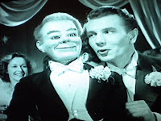

Custom figure
12/3/2010
{kind=link}

Question: I'm interested in getting a custom made Dummy. The design I have in mind is like 'Hugo' from the British 1945 film 'Dead Of Night'. He's a fairly large Dummy and pretty creepy, dressed in a dinner suit. I wonder if this would be feasible! Or anything similar.
* * * * *
Answer: Sorry. The figure you have in mind is not something that I can build. Nor do I have a suggested figuremaker. I wish I could be more helpful. The figure in the movie is very unique and was made by Len Insull of England. Mr. Insull is no longer living. His figures are in great demand but rarely is one offered for sale. The one in the photo has been modified from the original to appear more human. Thus the "creepy" look as you describe it.
(Side note: I personally prefer a more "cartoonish" character that simply acts human. They are much friendlier.) Of course, you may be wanting to freak people out with the figure, and if so, that's your prerogative. (Just keep a wide distance from my neighborhood. :-)